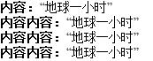
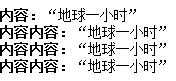
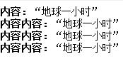
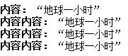
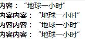
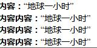

info
代码
* { margin: 0;padding: 0;font-size: 14px; } ol { list-style: none; width: 200px; } ol li { overflow: hidden; } ol li strong { float: left; } ol li p { _display: inline; overflow: auto; zoom: 1 }/*用inline hack修复IE6 bug*/ <ol> <li><strong>内容：</strong><p>“地球一小时”</p></li> <li><strong>内容内容：</strong><p>“地球一小时”</p></li> <li><strong>内容内容：</strong><p>“地球一小时”</p></li> <li><strong>内容内容：</strong><p>“地球一小时”</p></li> </ol>
内容：
“地球一小时”
内容内容：
“地球一小时”
内容内容：
“地球一小时”
内容内容：
“地球一小时”
利用BFC 和hasLayout 清理LI 容器内浮动元素，并利用BFC 和haslayout区域不与浮动框重合的特性，简单的实现两列文字布局。
demo01-效果截图
IE8-浏览器模式：IE8标准模式，文档模式：IE8标准模式

IE8-浏览器模式：IE8兼容模式，文档模式：IE7

IE8-浏览器模式：IE7，文档模式：IE7

IE8-浏览器模式：IE8兼容模式，文档模式：QUIRKS

CHROME

FIREFOX
